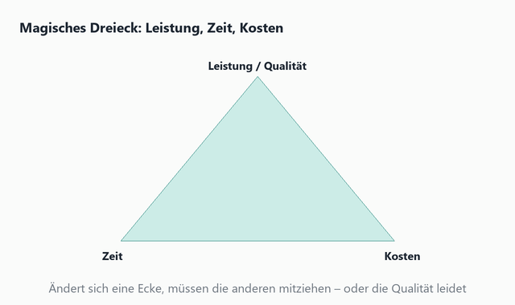
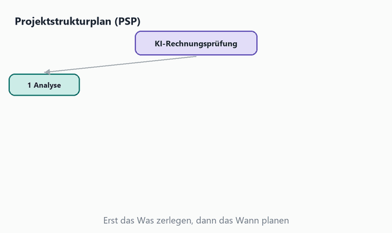
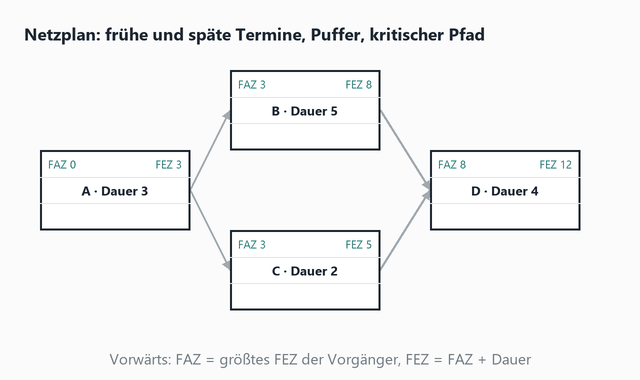
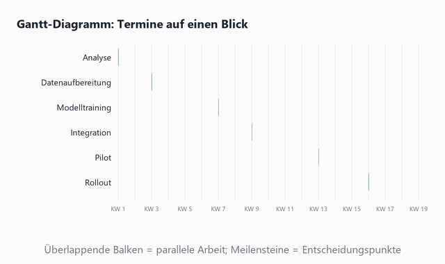
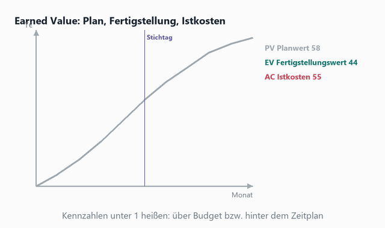
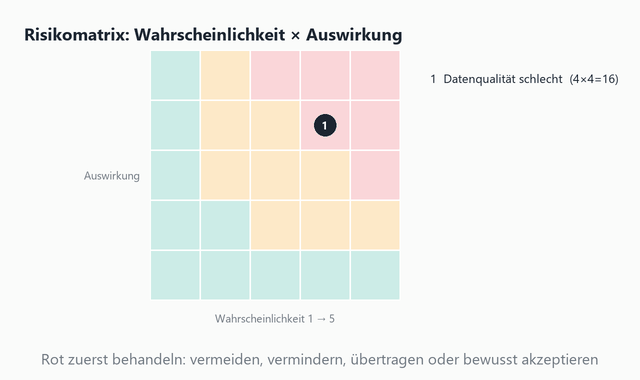
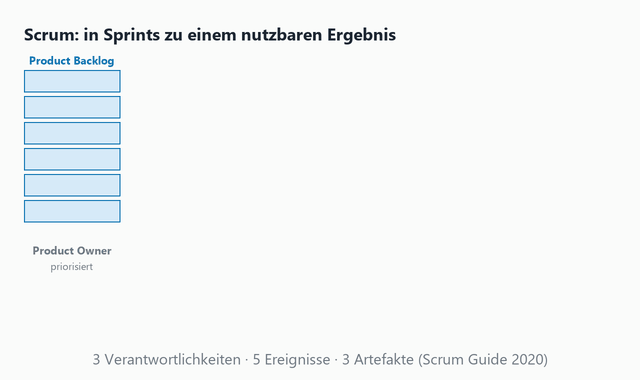
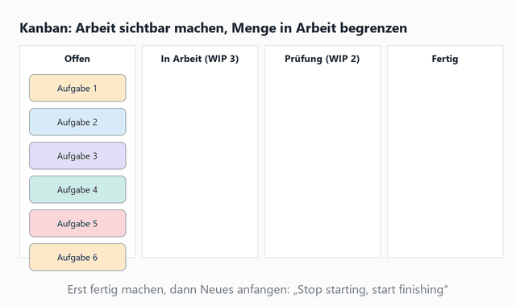
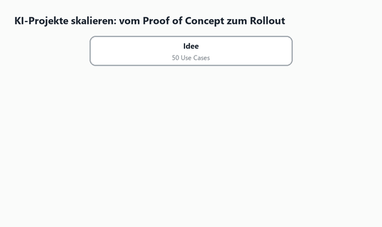

Als Bachelor Professional leiten Sie KI-Projekte – vom Projektauftrag über Planung, Steuerung und Berichte bis zum Abschluss. In diesem Modul lernen Sie die klassischen Werkzeuge (Projektstrukturplan, Netzplan, Gantt, Risikomanagement, Earned Value), die agilen Methoden (Scrum, Kanban) und hybride Vorgehen, mit denen KI-Projekte in der Praxis meist laufen. Zum Schluss geht es um das, woran viele KI-Vorhaben scheitern: die Skalierung vom Prototyp in den breiten Betrieb.
Eine Hochzeit zu organisieren ist ein Projekt: einmalig, mit festem Termin, begrenztem Budget, vielen Beteiligten und der Gefahr, dass etwas schiefgeht. Das tägliche Abendessen dagegen ist Routine.
Nach DIN 69901 ist ein Projekt ein Vorhaben, das im Wesentlichen durch die Einmaligkeit der Bedingungen in ihrer Gesamtheit gekennzeichnet ist. Typische Merkmale: klares Ziel, Einmaligkeit, zeitliche Begrenzung, begrenzte Ressourcen, eigene Organisation, Komplexität und Risiko.

KI-Projekte haben besondere Unsicherheiten: Ob die Daten reichen und das Modell gut genug wird, weiß man oft erst nach Experimenten. Deshalb plant man sie häufig in Stufen mit Entscheidungstoren (Lektion 17) oder agil.
Projekt = einmalig, zielgerichtet, befristet, mit begrenzten Ressourcen. Leistung, Zeit und Kosten müssen ausbalanciert werden.
Bevor ein Architekt plant, unterschreibt der Bauherr einen Auftrag: was gebaut wird, wie groß, bis wann, für wie viel. Ohne Auftrag streitet man später über alles.
Der Projektauftrag (Project Charter) ist die verbindliche Vereinbarung zwischen Auftraggeber und Projektleitung. Er schafft Klarheit und gibt der Projektleitung ihre Befugnisse.
| Inhalt des Projektauftrags | Beispiel KI-Rechnungsprüfung |
|---|---|
| Ausgangslage und Problem | 6 Tage Durchlaufzeit, 12 min manuelle Arbeit je Rechnung |
| Ziele (SMART) und Nicht-Ziele | 2 Tage, 70 % automatisch; nicht: Zahlungsprozess ändern |
| Umfang (Scope), Abgrenzung | Eingangsrechnungen Inland; Gutschriften später |
| Termine, Meilensteine | Pilot bis KW 12, Rollout bis KW 18 |
| Budget, Ressourcen | 180 T€, 2,5 Vollzeitstellen |
| Organisation, Rollen | Auftraggeber CFO, Projektleitung, Lenkungsausschuss |
| Risiken, Annahmen | Datenqualität, Akzeptanz, Betriebsrat |
| Abnahmekriterien | Kennzahlen nach 3 Monaten Betrieb erreicht |
Ohne unterschriebenen Projektauftrag mit Zielen, Umfang, Budget und Abnahmekriterien gibt es kein Projekt – nur gute Absichten.
Scope Creep: Der Umfang wächst schleichend („Kann die KI nicht auch noch …?“). Änderungen nur über ein geregeltes Änderungsverfahren (Lektion 10).
Wer im Mehrfamilienhaus den Garten umgestalten will, fragt besser vorher die Nachbarn – sonst blockiert einer, der vorher übergangen wurde.
Stakeholder sind alle Personen und Gruppen, die ein Projekt beeinflussen oder davon betroffen sind. Die Analyse bewertet ihren Einfluss und ihr Interesse (bzw. ihre Einstellung) und leitet Maßnahmen ab.
| geringes Interesse | hohes Interesse | |
|---|---|---|
| hoher Einfluss | zufriedenstellen (z. B. Geschäftsführung anderer Bereiche) | eng einbinden (Auftraggeber, Betriebsrat, Fachabteilung) |
| geringer Einfluss | beobachten | informieren (Beschäftigte, Kunden) |
Typische Stakeholder eines KI-Projekts: Auftraggeber, Nutzer in der Fachabteilung, IT und Betrieb, Datenschutzbeauftragter, Informationssicherheit, Betriebsrat, Rechtsabteilung, Lieferanten/Anbieter, Kunden. Umfeldanalyse erfasst zusätzlich sachliche Einflüsse: Gesetze (EU-KI-Verordnung, DSGVO), Technik, Markt, Termine anderer Projekte.
Wer Einfluss und Interesse hat, wird eng eingebunden – bei KI-Projekten fast immer Fachabteilung, Betriebsrat und Datenschutz.

Der Projektstrukturplan zerlegt das Projekt hierarchisch in Teilaufgaben bis zu Arbeitspaketen. Gliederung objektorientiert (nach Ergebnissen), funktionsorientiert (nach Tätigkeiten) oder phasenorientiert. Der PSP ist die Grundlage für Ablauf-, Termin-, Kosten- und Ressourcenplanung.
Ein Arbeitspaket ist abgrenzbar, hat ein überprüfbares Ergebnis, einen Verantwortlichen, eine Aufwands- und Dauerschätzung. Die Arbeitspaketbeschreibung enthält genau diese Punkte.
Der PSP beantwortet das „Was“: Alles, was nicht im PSP steht, gehört nicht zum Projekt.

| Vorgang | Dauer | Vorgänger | FAZ | FEZ | SAZ | SEZ | GP |
|---|---|---|---|---|---|---|---|
| A Datenanalyse | 3 | – | 0 | 3 | 0 | 3 | 0 |
| B Modell entwickeln | 5 | A | 3 | 8 | 3 | 8 | 0 |
| C Schnittstelle planen | 2 | A | 3 | 5 | 6 | 8 | 3 |
| D Integration | 4 | B, C | 8 | 12 | 8 | 12 | 0 |
Vorwärts die frühesten, rückwärts die spätesten Termine; Puffer 0 = kritischer Pfad.
Bei mehreren Vorgängern nimmt man vorwärts das größte FEZ, bei mehreren Nachfolgern rückwärts das kleinste SAZ. Wer das verwechselt, rechnet den ganzen Netzplan falsch.

Netzplan für die Logik, Gantt für die Kommunikation, Meilensteine für Entscheidungen.

Earned Value vergleicht Plan, Fortschritt und Kosten: CPI = EV / AC, SPI = EV / PV.
„Wir haben erst 55 % des Budgets ausgegeben, alles gut“ – ohne den Fertigstellungswert sagt das nichts. Entscheidend ist, wie viel Arbeit für das Geld geschafft wurde.

Beispiel: Risiko „Datenqualität reicht nicht“, Wahrscheinlichkeit 30 %, Schaden 60.000 € (Verzögerung, Nacharbeit) → Erwartungswert 0,3 · 60.000 = 18.000 €. Eine Datenanalyse vorab für 8.000 €, die das Risiko auf 10 % senkt, lohnt sich: neuer Erwartungswert 6.000 €, Ersparnis 12.000 € bei 8.000 € Kosten.
Typische KI-Risiken: Datenqualität und -verfügbarkeit, Modellgüte reicht nicht, Akzeptanz, Recht (Hochrisiko-Einstufung, Datenschutz), Abhängigkeit vom Anbieter, Kosten im Betrieb, Schlüsselpersonen.
Risiko = Wahrscheinlichkeit × Auswirkung. Maßnahmen lohnen sich, wenn sie den Erwartungswert stärker senken, als sie kosten.
| Rolle im KI-Projekt | Aufgabe |
|---|---|
| Auftraggeber / Sponsor | gibt Ziele und Budget, trifft Grundsatzentscheidungen |
| Lenkungsausschuss | steuert an Meilensteinen, entscheidet über Änderungen und Eskalationen |
| Projektleitung | plant, steuert, berichtet, führt das Team |
| Fachexperten (Domäne) | Wissen über den Prozess, Labels, Abnahme |
| Data Scientist / ML Engineer | Daten, Modelle, Pipelines |
| Data Engineer | Datenzugang, Datenqualität, Plattform |
| Softwareentwicklung / IT-Betrieb | Integration, Betrieb, Sicherheit |
| Datenschutz, Recht, Betriebsrat | Prüfung und Mitwirkung |
| Aufgabe | Projektleitung | Data Scientist | Fachbereich | Datenschutz |
|---|---|---|---|---|
| Modell trainieren | A | R | C | I |
| Datenschutz-Folgenabschätzung | A | C | C | R |
| Abnahme Pilot | R | I | A | I |
RACI: Responsible (führt aus), Accountable (trägt die Verantwortung, genau eine Person je Aufgabe), Consulted (wird vorher gefragt), Informed (wird informiert). Projektorganisation: Stabs-/Einfluss-, Matrix- oder reine Projektorganisation (Modul 15).
Interdisziplinäre KI-Teams brauchen klare Rollen – je Aufgabe genau ein „A“ in der RACI-Matrix.
Ein Navi vergleicht ständig, wo Sie sind und wo Sie sein sollten, und berechnet bei Abweichung eine neue Route. Projektsteuerung macht dasselbe mit Terminen, Kosten und Ergebnissen.
Projektcontrolling erfasst regelmäßig den Ist-Stand, vergleicht ihn mit dem Plan, analysiert Abweichungen und leitet Steuerungsmaßnahmen ab. Änderungsmanagement (Change Requests) regelt, wie Umfang, Termine oder Budget geändert werden.
| Ampel | Bedeutung | Reaktion |
|---|---|---|
| Grün | im Plan | weiter wie geplant |
| Gelb | Abweichung, mit eigenen Mitteln behebbar | Maßnahmen der Projektleitung |
| Rot | Ziel gefährdet, Entscheidung nötig | Eskalation an den Lenkungsausschuss |
Steuerungsmaßnahmen: Ressourcen erhöhen, Arbeitspakete parallelisieren (Fast Tracking), Umfang reduzieren, Termine verschieben, Qualität anpassen (nur bewusst!). Change Request: Antrag mit Begründung → Auswirkungen auf Zeit, Kosten, Risiko bewerten → Entscheidung durch den Berechtigten → Pläne anpassen und dokumentieren.
Steuern heißt: messen, vergleichen, entscheiden – und Änderungen nur über ein geregeltes Verfahren zulassen.
| Bericht | Zweck | Inhalte |
|---|---|---|
| Statusbericht | regelmäßig (z. B. 14-tägig) den Stand zeigen | Ampel je Bereich, erledigt/geplant, Kennzahlen, Risiken, Entscheidungsbedarf |
| Zwischenbericht | an Meilensteinen Ergebnisse bewerten | erreichte Ergebnisse, technische, organisatorische und wirtschaftliche Bewertung, Empfehlung |
| Abschlussbericht | Projekt beenden und bewerten | Zielerreichung, Kosten- und Terminbilanz, Übergabe in den Betrieb, offene Punkte, Lessons Learned |
§ 5 verlangt Berichte „unter Berücksichtigung technischer, organisatorischer und betriebswirtschaftlicher Zusammenhänge sowie unter Beachtung von vertraglichen Vorgaben, rechtlichen Regelungen und Nachhaltigkeitsaspekten“. Für KI-Projekte gehören daher hinein: Modellgüte gegenüber Baseline, Betriebskosten, rechtliche Einordnung (EU-KI-Verordnung, Datenschutz), Energiebedarf, Folgen für Beschäftigte.
KI-gestützt berichten: Kennzahlen automatisch aus Systemen ziehen, Entwürfe mit Sprachmodellen erstellen, Ergebnisse visualisieren – Inhalte aber immer prüfen und verantworten. Lessons Learned: Was lief gut, was schlecht, was machen wir künftig anders? Ergebnisse für kommende Projekte zugänglich ablegen.
Berichte richten sich an Entscheider: kurz, mit Ampel, Kennzahlen, Risiken und klarem Entscheidungsbedarf.
„Erstellen Sie die Gliederung eines Zwischenberichts für die Geschäftsführung“ – nennen Sie Ausgangslage, Zielerreichung mit Kennzahlen, Kosten und Termine, Risiken, rechtliche Aspekte, Nachhaltigkeit, Empfehlung und Entscheidungsbedarf.
Eine Weltreise plant man nicht bis zur letzten Stunde im Voraus. Man bucht die erste Etappe, lernt unterwegs und passt den Rest an. Agil heißt: in kurzen Schritten liefern, lernen, anpassen.
Das Agile Manifest (2001) stellt vier Werte voran: Individuen und Interaktionen mehr als Prozesse und Werkzeuge, funktionierende Software mehr als umfassende Dokumentation, Zusammenarbeit mit dem Kunden mehr als Vertragsverhandlung, Reagieren auf Veränderung mehr als das Befolgen eines Plans. Dazu kommen zwölf Prinzipien.
| klassisch (Wasserfall) | agil | |
|---|---|---|
| Anforderungen | zu Beginn vollständig festgelegt | entwickeln sich, werden priorisiert |
| Lieferung | am Ende | in kurzen Zyklen, früh nutzbar |
| Fest / variabel | Umfang fest, Zeit und Kosten variabel | Zeit und Kosten fest, Umfang variabel |
| Geeignet für | klare, stabile Anforderungen (Bau, Umzug eines Rechenzentrums) | Unsicherheit, Experimente, neue Produkte (KI-Modelle) |
Agil passt, wenn vieles unsicher ist – wie bei KI: Man lernt durch Ausprobieren, was mit den Daten möglich ist.

| Bestandteil | Inhalt (Scrum Guide 2020) |
|---|---|
| Product Owner | maximiert den Wert des Produkts, verantwortet und priorisiert das Product Backlog, eine Person |
| Scrum Master | sorgt für das Verständnis und die Anwendung von Scrum, beseitigt Hindernisse, dient Team und Organisation |
| Developers | erstellen in jedem Sprint ein nutzbares Increment; organisieren ihre Arbeit selbst |
| Sprint | fester Zeitrahmen von höchstens einem Monat; Behälter für alle anderen Ereignisse |
| Sprint Planning | Was und wie im Sprint? Sprint Goal festlegen (bis 8 h bei einem Monat Sprint) |
| Daily Scrum | 15 Minuten täglich, Fortschritt zum Sprint Goal, Plan anpassen |
| Sprint Review | Ergebnis mit Stakeholdern prüfen, Backlog anpassen (bis 4 h) |
| Sprint Retrospective | Zusammenarbeit und Arbeitsweise verbessern (bis 3 h) |
| Product Backlog → Product Goal | geordnete Liste aller Anforderungen |
| Sprint Backlog → Sprint Goal | ausgewählte Einträge und Plan für den Sprint |
| Increment → Definition of Done | nutzbares Ergebnis, das die Qualitätskriterien erfüllt |
Scrum in KI-Projekten: Backlog-Einträge sind oft Experimente („Prüfen, ob Merkmal X den Recall verbessert“). Die Definition of Done umfasst dann auch Tests, Dokumentation, Bewertung gegen die Baseline und Datenschutzprüfung.
Scrum: 3 Verantwortlichkeiten (Product Owner, Scrum Master, Developers), 5 Ereignisse, 3 Artefakte mit je einer Verpflichtung.
Der Scrum Master ist kein Projektleiter mit Weisungsbefugnis, und der Product Owner ist kein Komitee. Solche Verwechslungen kosten in der Prüfung Punkte.

Kanban: sichtbar machen, Menge in Arbeit begrenzen, Fluss messen und verbessern.
Hybrides Projektmanagement kombiniert klassische Rahmenplanung (Phasen, Meilensteine, Budget, Verträge) mit agiler Umsetzung (Sprints für Modellentwicklung). Das ist in Unternehmen der Normalfall.
Der Cross-Industry Standard Process for Data Mining hat sechs Phasen mit Rücksprüngen: Business Understanding, Data Understanding, Data Preparation, Modeling, Evaluation, Deployment. Er ist das bekannteste Vorgehensmodell für Datenprojekte.
| CRISP-DM-Phase | Fragen | Ergebnis |
|---|---|---|
| Business Understanding | Welches Problem, welches Ziel, welche Erfolgskriterien? | Projektauftrag, Kennzahlen |
| Data Understanding | Welche Daten gibt es, wie gut sind sie? | Datenbericht, Qualitätsbewertung |
| Data Preparation | Wie bereiten wir sie auf? | Feature-Tabelle, Pipeline |
| Modeling | Welche Verfahren, welche Parameter? | Modellkandidaten |
| Evaluation | Erfüllt das Modell die Geschäftsziele? | Bewertung gegen Baseline, Go/No-Go |
| Deployment | Wie kommt es in den Betrieb? | Integration, Monitoring, Übergabe |
Hybrid ist Praxisstandard: klassischer Rahmen mit Meilensteinen, agile Sprints im Inneren, CRISP-DM als fachlicher Ablauf.

| Stufe | Ziel | Erfolgskriterium |
|---|---|---|
| Proof of Concept (PoC) | Ist es technisch machbar? | Modellgüte auf historischen Daten über Baseline |
| Pilot | Wirkt es im echten Betrieb? | Geschäftskennzahl verbessert, Nutzer akzeptieren |
| Rollout / Skalierung | Wirkt es überall, dauerhaft und wirtschaftlich? | Betrieb stabil, Kosten je Fall im Plan |
Warum viele KI-Projekte im Pilot stecken bleiben („PoC-Falle“): fehlende Datenplattform, kein MLOps, unklare Zuständigkeit im Betrieb, Integration unterschätzt, Kosten je Anfrage zu hoch, fehlende Akzeptanz, rechtliche Fragen zu spät geklärt.
Voraussetzungen für Skalierung: wiederverwendbare Datenplattform, MLOps (Modul 7), Betriebsmodell mit Verantwortlichen, Schulung und Change Management (Modul 10), Budget für den laufenden Betrieb, Governance (Modul 6).
Agile Skalierungsrahmen für viele Teams: SAFe (Scaled Agile Framework: Agile Release Trains, Planungsereignisse über mehrere Teams, Portfolioebene), LeSS (Large-Scale Scrum: ein Product Owner, ein Backlog für mehrere Teams), Nexus (3 bis 9 Scrum-Teams an einem Produkt), Scrum of Scrums (Abstimmung der Teams).
Skalieren heißt: PoC → Pilot → Rollout mit Entscheidungstoren – und vorher Plattform, MLOps, Betriebsmodell und Akzeptanz schaffen.
„Die Skalierung von (KI-)Projekten“ steht wörtlich in § 1 und § 5. In der Transferarbeit sollten Sie zeigen, wie Ihr Projekt vom Pilot auf weitere Standorte oder Prozesse übertragen werden kann.
| Aufgabe | KI-Unterstützung | Grenze |
|---|---|---|
| Protokolle | Besprechungen transkribieren und zusammenfassen | Einwilligung, Vertraulichkeit; prüfen |
| Planung | PSP-Entwurf, Risiko-Brainstorming, Aufwandsschätzung als Vorschlag | Fachwissen und Erfahrung entscheiden |
| Auswertung | Kennzahlen aus Systemen ziehen, Abweichungen erklären | Datenqualität, Plausibilität |
| Berichte | Entwürfe für Status- und Abschlussberichte | Verantwortung bleibt bei der Projektleitung |
| Präsentation | Folienstruktur, Visualisierungen, Formulierungen für Zielgruppen | Aussagen prüfen, Quellen nennen |
| Wissensmanagement | Lessons Learned durchsuchbar machen | Zugriffsrechte |
KI beschleunigt Projektarbeit, ersetzt aber nicht die Verantwortung: Inhalte prüfen, Vertraulichkeit wahren, Quellen nennen.
Vertrauliche Projektunterlagen in einen öffentlichen KI-Dienst kopieren kann Geschäftsgeheimnisse und Datenschutz verletzen. Nur freigegebene Werkzeuge nutzen.
Tragen Sie Ihre Antworten in die Felder ein. Der Earned-Value-Rechner in Lektion 7 hilft bei Aufgabe 5.
1. Einführung einer KI-gestützten Rechnungsprüfung. 2. Tägliche Datensicherung. 3. Umzug des Rechenzentrums in ein neues Gebäude.
1. Projekt · 2. Routine (Prozess) · 3. Projekt. Je 1 Punkt.
Welche Strategie wählen Sie? 1. Betriebsrat (Mitbestimmungsrechte, sehr interessiert). 2. Leiter eines anderen Geschäftsbereichs (kann Budget umverteilen, kaum interessiert). 3. Sachbearbeitung der Buchhaltung (stark betroffen, wenig Einfluss). 4. Kantinenbetreiber (weder Einfluss noch Interesse).
1. eng einbinden · 2. zufriedenstellen · 3. informieren (und als Nutzer beteiligen) · 4. beobachten. Je 1 Punkt.
Vorgänge (Dauer in Tagen, Vorgänger): A 4 (–), B 6 (A), C 3 (A), D 2 (C), E 5 (B und D). Berechnen Sie die Projektdauer, den kritischen Pfad und den Gesamtpuffer von C und D.
Vorwärts: A 0–4, B 4–10, C 4–7, D 7–9, E beginnt beim größten FEZ der Vorgänger = 10, endet 15. Projektdauer 15 Tage (2 P.). Rückwärts: E 10–15, B 4–10, D 8–10, C 5–8, A 0–4. Kritischer Pfad A–B–E (2 P.). Gesamtpuffer C = 1, D = 1 (2 P.).
Das Arbeitspaket „Daten aufbereiten“ hat einen Aufwand von 36 Personentagen. Drei Personen arbeiten daran, jede ist zu 80 % für das Projekt verfügbar. Wie viele Arbeitstage dauert das Paket?
Kapazität je Tag 3 · 0,8 = 2,4 Personentage; 36 / 2,4 = 15 Arbeitstage (2 P.).
Budget (BAC) 200 T€. Am Stichtag: Planwert PV 120 T€, Fertigstellungswert EV 100 T€, Istkosten AC 125 T€. Berechnen Sie CV, SV, CPI, SPI und die Kostenprognose EAC = BAC / CPI.
CV = 100 − 125 = −25 T€ · SV = 100 − 120 = −20 T€ · CPI = 100 / 125 = 0,80 · SPI = 100 / 120 ≈ 0,83 · EAC = 200 / 0,8 = 250 T€. Je 1 Punkt. Das Projekt ist teurer und langsamer als geplant.
Risiko „Trainingsdaten reichen nicht“: Wahrscheinlichkeit 40 %, Schaden 50.000 €. Eine Datenanalyse vorab kostet 6.000 € und senkt die Wahrscheinlichkeit auf 15 %. a) Erwartungswert vorher, b) nachher, c) Nettovorteil der Maßnahme, d) Lohnt sie sich?
a) 0,4 · 50.000 = 20.000 € · b) 0,15 · 50.000 = 7.500 € · c) 20.000 − 7.500 − 6.000 = 6.500 € · d) ja. Je 1 Punkt.
Welche Strategie liegt vor? 1. Eine Versicherung gegen Haftungsschäden abschließen. 2. Auf eine unerprobte Technologie ganz verzichten. 3. Vorab eine Datenqualitätsanalyse durchführen. 4. Ein kleines Risiko bewusst tragen und eine Reserve einplanen.
1. übertragen · 2. vermeiden · 3. vermindern · 4. akzeptieren. Je 1 Punkt.
In einer RACI-Matrix steht bei der Aufgabe „Modell abnehmen“: Projektleitung A, Fachbereich A, Data Scientist C, Datenschutz I. Was ist falsch, und wie korrigieren Sie es?
Es gibt zwei A, aber genau eine Person darf verantwortlich sein (1 P.); es fehlt ein R, also wer die Abnahme durchführt (1 P.). Korrektur z. B.: Fachbereich A, Projektleitung R, Data Scientist C, Datenschutz I (1 P.).
Wer oder was ist gemeint? 1. Priorisiert das Product Backlog. 2. Beseitigt Hindernisse und sorgt dafür, dass Scrum verstanden wird. 3. Tägliches 15-Minuten-Treffen zum Sprint Goal. 4. Ergebnis mit Stakeholdern prüfen, Backlog anpassen. 5. Zusammenarbeit und Arbeitsweise verbessern.
1. Product Owner · 2. Scrum Master · 3. Daily Scrum · 4. Sprint Review · 5. Sprint Retrospective. Je 1 Punkt.
Klassisch, agil oder hybrid? 1. Umzug eines Serverraums zu einem festen Termin mit klaren Anforderungen. 2. Entwicklung eines Prognosemodells, bei dem unklar ist, welche Daten wirken. 3. KI-Einführung mit festem Budget, Dienstleistervertrag und Meilensteinen, Modellentwicklung in Sprints.
1. klassisch · 2. agil · 3. hybrid. Je 1 Punkt.
Ein Data-Team hat 9 Aufgaben gleichzeitig in Arbeit und schließt im Schnitt 1,5 Aufgaben pro Tag ab. a) Wie lange dauert eine Aufgabe im Mittel? b) Wie lange bei einem WIP-Limit von 3 und gleichem Durchsatz?
a) 9 / 1,5 = 6 Tage (2 P.) · b) 3 / 1,5 = 2 Tage (2 P.). Weniger gleichzeitig angefangene Arbeit bringt jedes Ergebnis schneller.
Die Muster Logistik AG hat an einem von zwölf Standorten einen erfolgreichen Pilot: Ein KI-Modell sagt den Personalbedarf im Lager voraus und senkt Überstunden um 30 %. Die Geschäftsführung will in sechs Monaten alle Standorte ausrollen. Beschreiben Sie a) drei Risiken des Rollouts, b) Voraussetzungen, die vorher geschaffen werden müssen, c) ein Vorgehen mit Stufen und Entscheidungstoren, d) die Projektorganisation und e) welche Kennzahlen der Lenkungsausschuss sehen sollte.
a) Risiken (2 P.): Standorte haben andere Abläufe und Datenqualität, Modell wirkt dort schlechter; Betrieb und Monitoring für zwölf Standorte fehlen; Akzeptanz der Schichtleitungen; Betriebsrat (Personalplanung, § 87 BetrVG); Kosten im Betrieb. b) Voraussetzungen (2 P.): einheitliche Datenplattform und Schnittstellen, MLOps mit Monitoring und Nachtraining je Standort, Betriebsmodell mit Verantwortlichen, Schulung, Betriebsvereinbarung, Budget für den laufenden Betrieb. c) Vorgehen (2 P.): Welle 1 mit zwei bis drei unterschiedlichen Standorten, Entscheidungstor nach acht Wochen anhand der Kennzahlen, dann Wellen mit Lessons Learned; hybrid mit Meilensteinplan und Sprints für Anpassungen. d) Organisation (1 P.): Auftraggeber Geschäftsführung, Lenkungsausschuss, Projektleitung, je Standort Key User, Data Science, IT-Betrieb, Betriebsrat und Datenschutz eingebunden. e) Kennzahlen (1 P.): Überstunden, Prognosefehler je Standort, Nutzung, Kosten je Standort, Termin- und Budgettreue (SPI, CPI).
20 Fragen im Stil der schriftlichen Prüfung, jeweils eine richtige Antwort. Ab 14 richtigen Antworten (70 %) sind Sie gut vorbereitet.
einmalig, Ziel, befristet, begrenzte Ressourcen; magisches Dreieck.
Ziele, Nicht-Ziele, Umfang, Termine, Budget, Rollen, Abnahme.
Einfluss × Interesse; Betriebsrat und Datenschutz früh einbinden.
PSP → Netzplan (kritischer Pfad) → Gantt, Meilensteine, Ressourcen.
Earned Value: CPI = EV/AC, SPI = EV/PV, EAC = BAC/CPI.
Wahrscheinlichkeit × Auswirkung; vermeiden, vermindern, übertragen, akzeptieren.
Soll-Ist, Ampel, Change Requests, Status- und Abschlussbericht.
Manifest, Scrum (3 – 5 – 3), Kanban mit WIP-Limits.
klassischer Rahmen, agile Sprints, CRISP-DM als Ablauf.
PoC → Pilot → Rollout mit Toren; SAFe, LeSS, Nexus.
| Begriff | Erklärung |
|---|---|
| Arbeitspaket | kleinste Einheit im PSP mit Ergebnis, Verantwortlichem und Schätzung |
| Change Request | formaler Antrag auf Änderung von Umfang, Termin oder Budget |
| CPI / SPI | Kosten- bzw. Terminentwicklungsindex der Earned-Value-Analyse |
| CRISP-DM | sechsphasiges Vorgehensmodell für Datenprojekte |
| Kritischer Pfad | Vorgangskette ohne Puffer, bestimmt die Projektdauer |
| Lenkungsausschuss | Entscheidungsgremium über dem Projekt |
| Meilenstein | Ereignis ohne Dauer, an dem Ergebnisse geprüft werden |
| PoC | Proof of Concept, Nachweis der technischen Machbarkeit |
| RACI | Responsible, Accountable, Consulted, Informed |
| WIP-Limit | Obergrenze für gleichzeitig bearbeitete Aufgaben (Kanban) |
Weiter mit Modul 10: Innovation und digitale Transformation – KI-Ideen finden, bewerten und im Unternehmen verankern.